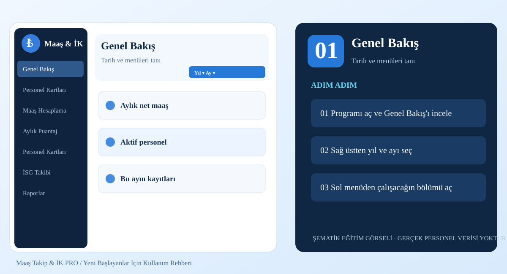
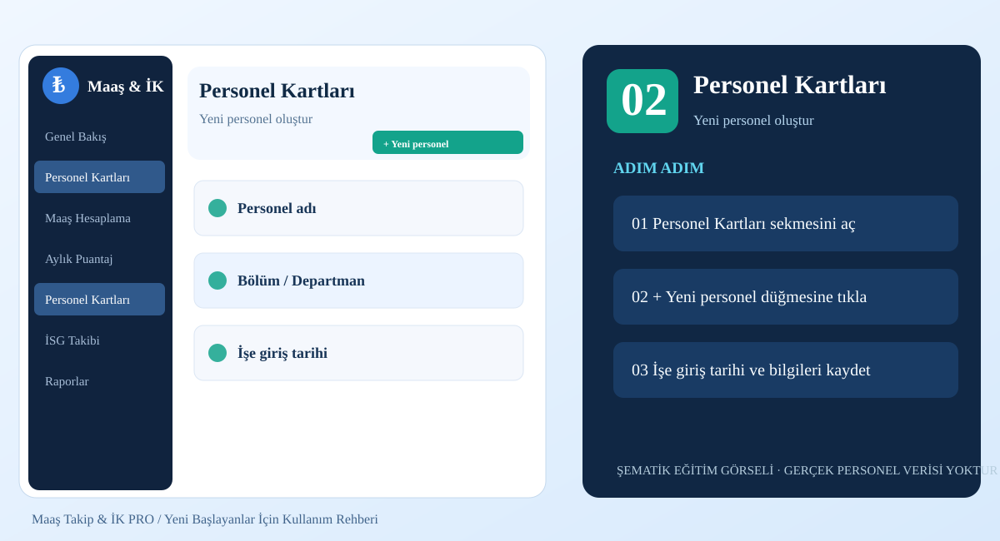
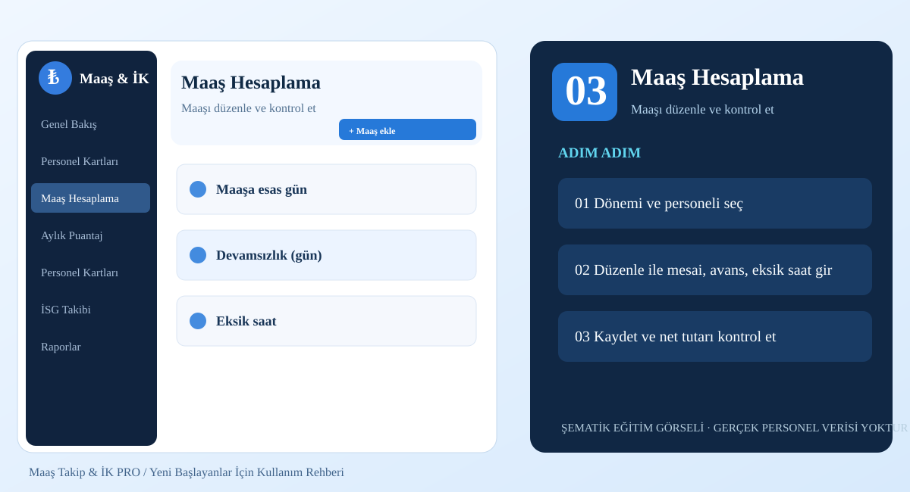
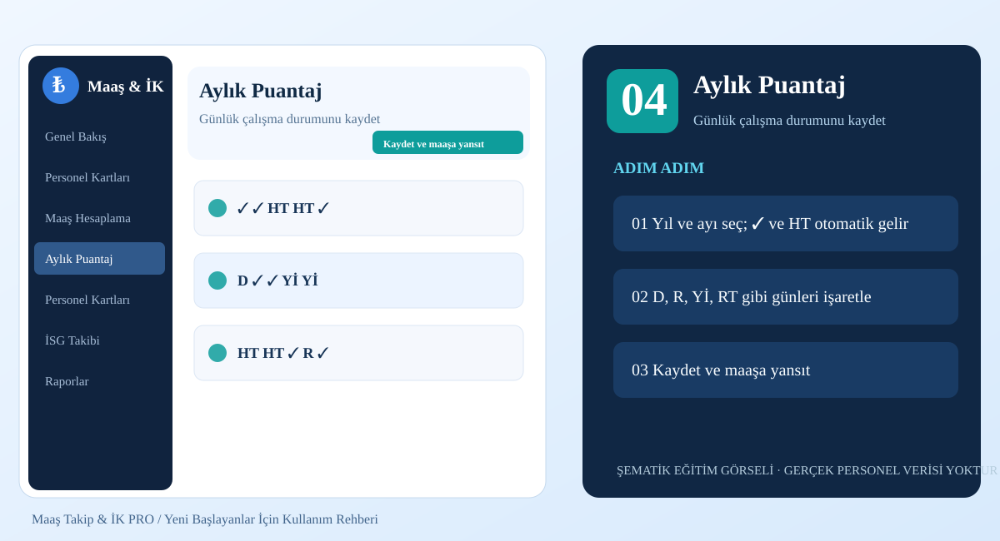
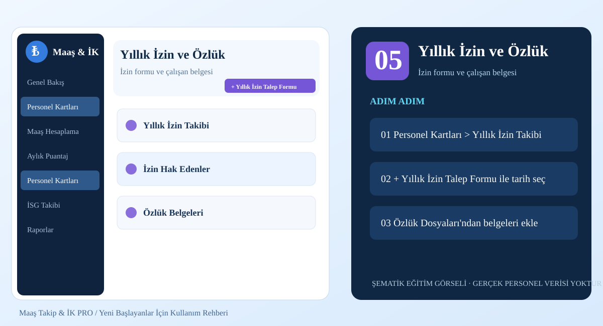
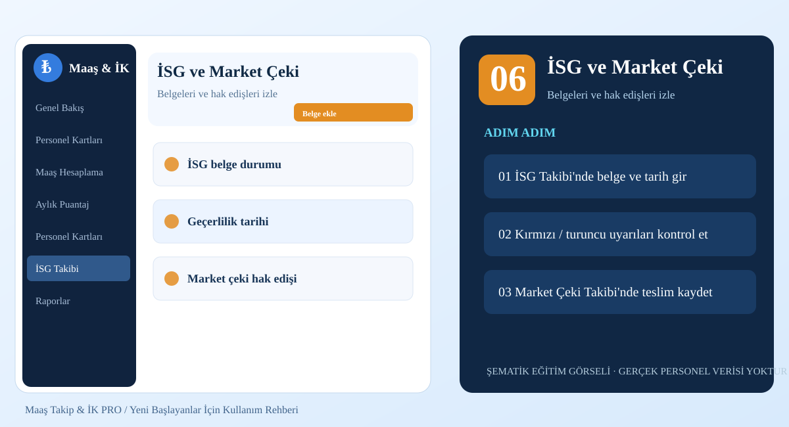
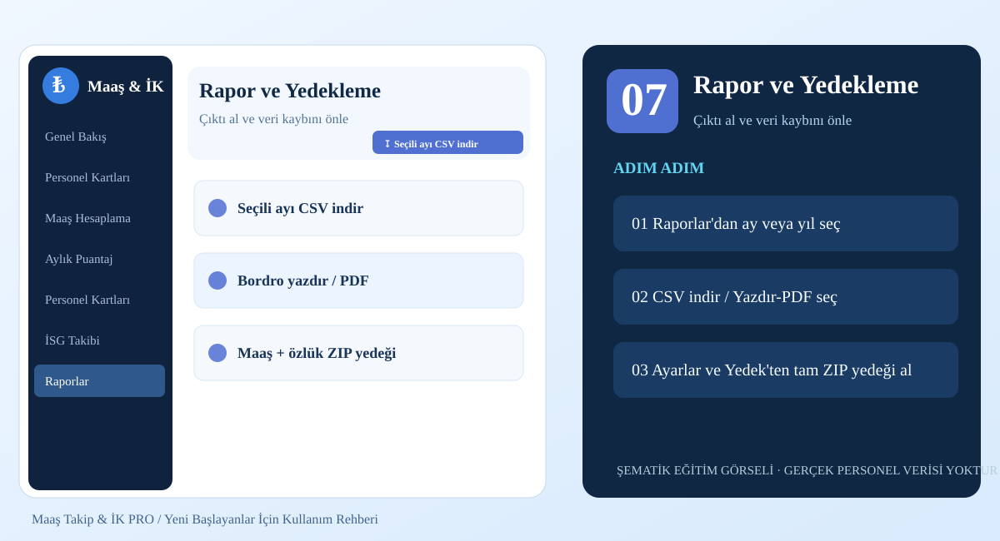

1/7Genel Bakış
Tarih ve menüleri tanı. Görsel şematik anlatımdır; kişisel veya gerçek maaş bilgisi içermez.

2/7Personel Kartları
Yeni personel oluştur. Görsel şematik anlatımdır; kişisel veya gerçek maaş bilgisi içermez.

3/7Maaş Hesaplama
Maaşı düzenle ve kontrol et. Görsel şematik anlatımdır; kişisel veya gerçek maaş bilgisi içermez.

4/7Aylık Puantaj
Günlük çalışma durumunu kaydet. Görsel şematik anlatımdır; kişisel veya gerçek maaş bilgisi içermez.

5/7Yıllık İzin ve Özlük
İzin formu ve çalışan belgesi. Görsel şematik anlatımdır; kişisel veya gerçek maaş bilgisi içermez.

6/7İSG ve Market Çeki
Belgeleri ve hak edişleri izle. Görsel şematik anlatımdır; kişisel veya gerçek maaş bilgisi içermez.

7/7Rapor ve Yedekleme
Çıktı al ve veri kaybını önle. Görsel şematik anlatımdır; kişisel veya gerçek maaş bilgisi içermez.
